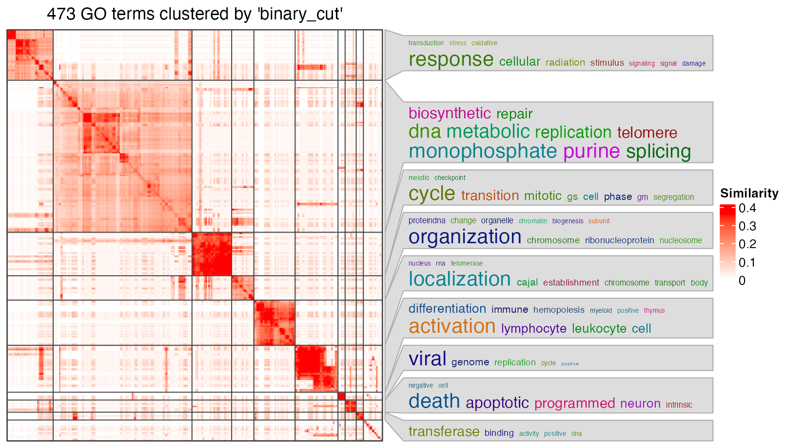
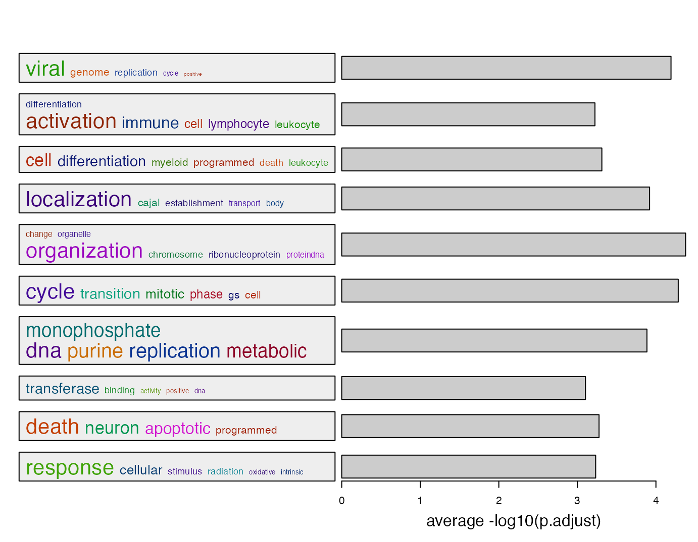
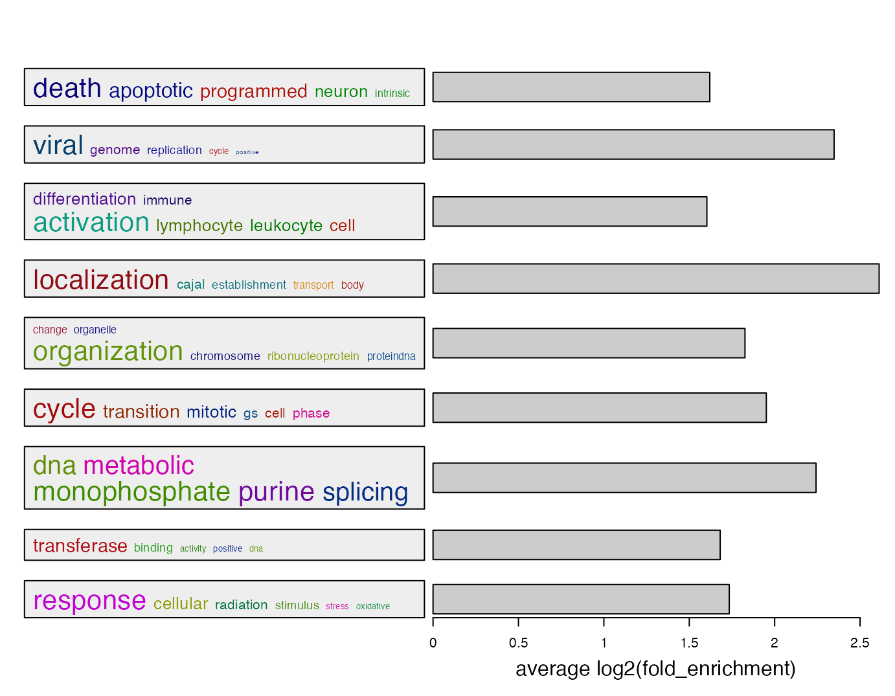
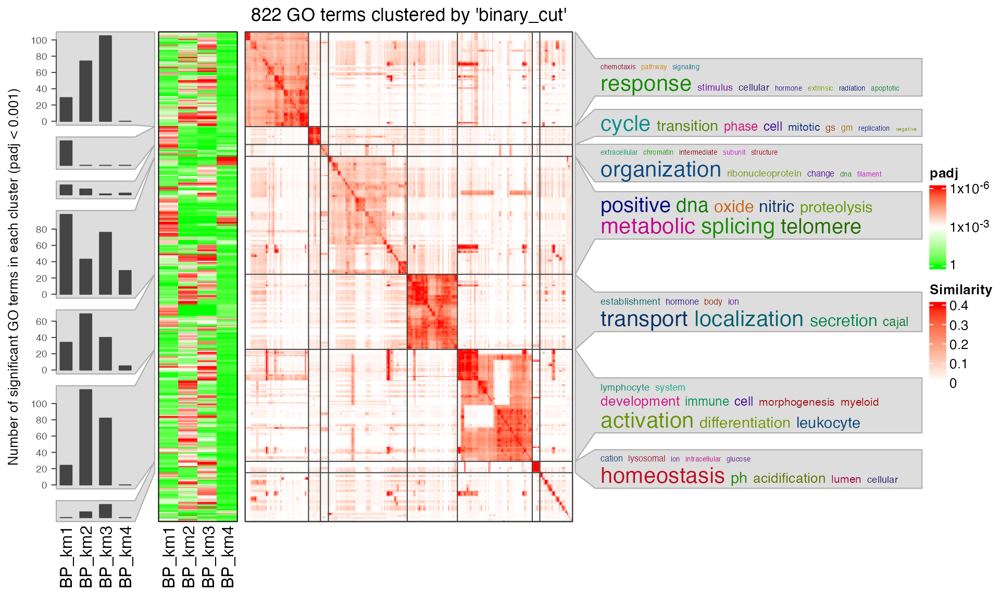
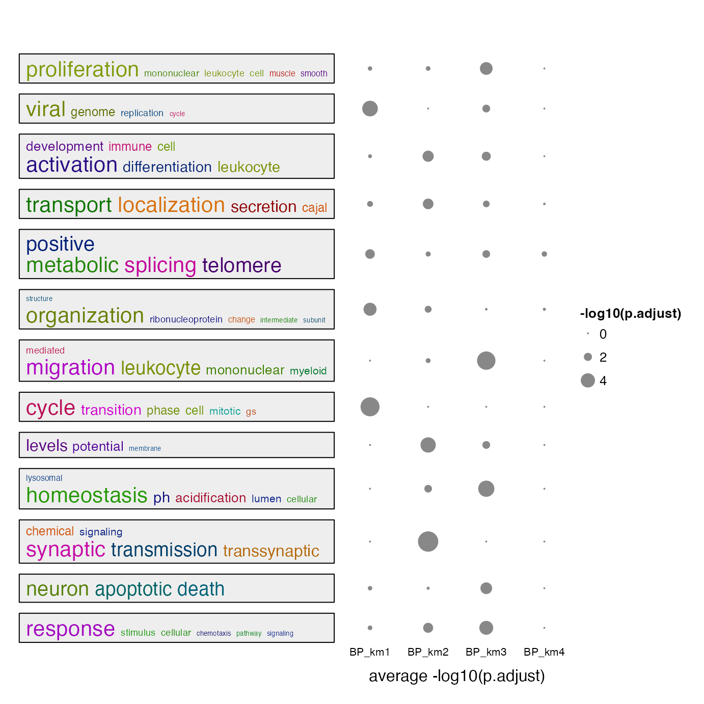

Summarize simplifyEnrichment plots
Zuguang Gu (z.gu@dkfz.de)
2024-09-13
Source:vignettes/summarize.Rmd
summarize.RmdThe lt object contains a list of GO enrichment tables.
names(lt)## [1] "BP_km1" "BP_km2" "BP_km3" "BP_km4"
head(lt[[1]][, 1:7])## ID Description GeneRatio BgRatio pvalue
## GO:0006974 GO:0006974 cellular response to DNA damage stimulus 77/471 871/18614 3.252635e-22
## GO:0006281 GO:0006281 DNA repair 61/471 587/18614 3.683205e-21
## GO:0000278 GO:0000278 mitotic cell cycle 78/471 933/18614 5.191864e-21
## GO:1903047 GO:1903047 mitotic cell cycle process 70/471 777/18614 1.148628e-20
## GO:0051276 GO:0051276 chromosome organization 58/471 626/18614 8.913192e-18
## GO:0006260 GO:0006260 DNA replication 38/471 278/18614 1.862901e-17
## p.adjust qvalue
## GO:0006974 1.545002e-18 1.174030e-18
## GO:0006281 8.220452e-18 6.246633e-18
## GO:0000278 8.220452e-18 6.246633e-18
## GO:1903047 1.363995e-17 1.036485e-17
## GO:0051276 8.467532e-15 6.434386e-15
## GO:0006260 1.474797e-14 1.120682e-14We first demonstrate the new plot on the single enrichment table. To use the simplifyEnrichment package, we extract significant GO terms, and then call simplifyGO().
library(simplifyEnrichment)
df = lt[[1]]
go_id = df$ID[df$p.adjust < 0.01]
simplifyGO(go_id)
The plot looks good, but it still contains too many graphic contents. For example, the GO similarity heatmap is useful, but it takes too much space on the final plot. Here I developed a new function summarizeGO() which simplifies the enrichment results even more. The idea is that since we already have the GO clusters, with a certain statistic of enrichment, we can simply use its average for the GO cluster.
In the following example, we use -log10(p.adjust) as an enrichment measure. The heights of bars correspond to the mean of -log10(p.adjust) of GO terms in different GO clusters. On the left side, we still use the word clouds which efficiently show the general functions in each GO cluster.
l = df$p.adjust < 0.01
summarizeGO(df$ID[l], -log10(df$p.adjust)[l], axis_label = "average -log10(p.adjust)")
GO IDs can be attached to the numeric value vector, but this time, the value argument should be explicitely specified when calling summarizeGO().
v = -log10(df$p.adjust)
names(v) = df$ID
summarizeGO(value = v[l], axis_label = "average -log10(p.adjust)")Beside -log10(p.adjust), we also suggest to use log2 fold enrichment as the enrichment measure. It is calculated as
\[ \log_2 \left( \frac{k/m_1}{m_2/n} \right) \]
where \(k\) is the number of DE genes (if the genes of interest are DE genes) in a gene set, \(m_1\) is the size of DE genes, \(m_2\) is the size of the gene set, \(n\) is the total number of genes in the universal set. Of course, the definition of \(m_1\) and \(m_2\) can be switched.
k = as.numeric(gsub("/\\d+$", "", df$GeneRatio))
m1 = as.numeric(gsub("^\\d+/", "", df$GeneRatio))
m2 = as.numeric(gsub("/\\d+$", "", df$BgRatio))
n = as.numeric(gsub("^\\d+/", "", df$BgRatio))
log2_fold_enrichment = log2(k*n/m1/m2)
summarizeGO(df$ID[l], log2_fold_enrichment[l], axis_label = "average log2(fold_enrichment)")
Of course, you can construct a named log2_fold_enrichment vector which only contains significant GO terms.
names(log2_fold_enrichment) = df$ID
summarizeGO(value = log2_fold_enrichment[l], axis_label = "average log2(fold_enrichment)")For multiple GO enrichment results, simplifyGOFromMultipleLists() can be used to visualize and compare GO clusters.
simplifyGOFromMultipleLists(lt, padj_cutoff = 0.001)
summarizeGO() can also be used to simplify such plot. Now the value of value is a list of numeric named vectors which contains significant GO terms in each enrichment table:
value = lapply(lt, function(df) {
v = -log10(df$p.adjust)
names(v) = df$ID
v[df$p.adjust < 0.001]
})
summarizeGO(value = value, axis_label = "average -log10(p.adjust)", legend_title = "-log10(p.adjust)")
## R version 4.3.3 (2024-02-29)
## Platform: x86_64-apple-darwin20 (64-bit)
## Running under: macOS Sonoma 14.6.1
##
## Matrix products: default
## BLAS: /Library/Frameworks/R.framework/Versions/4.3-x86_64/Resources/lib/libRblas.0.dylib
## LAPACK: /Library/Frameworks/R.framework/Versions/4.3-x86_64/Resources/lib/libRlapack.dylib; LAPACK version 3.11.0
##
## Random number generation:
## RNG: L'Ecuyer-CMRG
## Normal: Inversion
## Sample: Rejection
##
## locale:
## [1] en_GB.UTF-8/en_GB.UTF-8/en_GB.UTF-8/C/en_GB.UTF-8/en_GB.UTF-8
##
## time zone: Europe/Berlin
## tzcode source: internal
##
## attached base packages:
## [1] stats4 stats graphics grDevices utils datasets methods base
##
## other attached packages:
## [1] simplifyEnrichment_1.99.0 hu6800.db_3.13.0 org.Hs.eg.db_3.17.0
## [4] AnnotationDbi_1.62.2 IRanges_2.36.0 S4Vectors_0.40.2
## [7] Biobase_2.60.0 BiocGenerics_0.48.1 cola_2.6.0
## [10] knitr_1.45
##
## loaded via a namespace (and not attached):
## [1] splines_4.3.3 later_1.3.2 bitops_1.0-7
## [4] ggplotify_0.1.2 tibble_3.2.1 polyclip_1.10-6
## [7] XML_3.99-0.16.1 lifecycle_1.0.4 doParallel_1.0.17
## [10] NLP_0.2-1 lattice_0.22-5 MASS_7.3-60.0.1
## [13] magrittr_2.0.3 sass_0.4.9 rmarkdown_2.26
## [16] jquerylib_0.1.4 yaml_2.3.8 httpuv_1.6.15
## [19] doRNG_1.8.6 cowplot_1.1.3 DBI_1.2.2
## [22] RColorBrewer_1.1-3 eulerr_7.0.2 zlibbioc_1.46.0
## [25] purrr_1.0.2 ggraph_2.2.1 RCurl_1.98-1.14
## [28] yulab.utils_0.1.4 tweenr_2.0.3 circlize_0.4.16
## [31] GenomeInfoDbData_1.2.10 enrichplot_1.20.3 tm_0.7-13
## [34] ggrepel_0.9.5 irlba_2.3.5.1 tidytree_0.4.6
## [37] genefilter_1.82.1 annotate_1.78.0 brew_1.0-10
## [40] commonmark_1.9.1 pkgdown_2.0.9 codetools_0.2-19
## [43] DOSE_3.26.2 xml2_1.3.6 ggforce_0.4.2
## [46] tidyselect_1.2.1 shape_1.4.6.1 aplot_0.2.2
## [49] farver_2.1.1 viridis_0.6.5 matrixStats_1.3.0
## [52] jsonlite_1.8.8 GetoptLong_1.0.5 tidygraph_1.3.1
## [55] survival_3.5-8 iterators_1.0.14 systemfonts_1.0.6
## [58] foreach_1.5.2 tools_4.3.3 treeio_1.24.3
## [61] ragg_1.3.1 Rcpp_1.0.12 glue_1.7.0
## [64] gridExtra_2.3 xfun_0.43 qvalue_2.32.0
## [67] flexclust_1.4-2 MatrixGenerics_1.12.3 GenomeInfoDb_1.36.4
## [70] dplyr_1.1.4 withr_3.0.0 fastmap_1.1.1
## [73] fansi_1.0.6 digest_0.6.35 R6_2.5.1
## [76] mime_0.12 gridGraphics_0.5-1 microbenchmark_1.4.10
## [79] textshaping_0.3.7 colorspace_2.1-0 Cairo_1.6-2
## [82] GO.db_3.17.0 markdown_1.12 RSQLite_2.3.6
## [85] utf8_1.2.4 tidyr_1.3.1 generics_0.1.3
## [88] data.table_1.15.4 class_7.3-22 graphlayouts_1.1.1
## [91] httr_1.4.7 htmlwidgets_1.6.4 scatterpie_0.2.2
## [94] scatterplot3d_0.3-44 pkgconfig_2.0.3 gtable_0.3.5
## [97] modeltools_0.2-23 blob_1.2.4 ComplexHeatmap_2.18.0
## [100] impute_1.74.1 XVector_0.40.0 clusterProfiler_4.8.3
## [103] shadowtext_0.1.3 htmltools_0.5.8.1 fgsea_1.26.0
## [106] clue_0.3-65 scales_1.3.0 png_0.1-8
## [109] ggfun_0.1.4 reshape2_1.4.4 rjson_0.2.21
## [112] nlme_3.1-164 cachem_1.0.8 GlobalOptions_0.1.2
## [115] Polychrome_1.5.1 stringr_1.5.1 parallel_4.3.3
## [118] HDO.db_0.99.1 desc_1.4.3 pillar_1.9.0
## [121] grid_4.3.3 vctrs_0.6.5 slam_0.1-50
## [124] promises_1.3.0 xtable_1.8-4 cluster_2.1.6
## [127] evaluate_0.23 magick_2.8.3 cli_3.6.2
## [130] compiler_4.3.3 rlang_1.1.3 crayon_1.5.2
## [133] rngtools_1.5.2 simona_1.3.12 mclust_6.1.1
## [136] skmeans_0.2-16 plyr_1.8.9 fs_1.6.4
## [139] stringi_1.8.4 viridisLite_0.4.2 BiocParallel_1.34.2
## [142] munsell_0.5.1 Biostrings_2.68.1 lazyeval_0.2.2
## [145] GOSemSim_2.26.1 Matrix_1.6-5 patchwork_1.2.0
## [148] bit64_4.0.5 ggplot2_3.5.1 KEGGREST_1.40.1
## [151] shiny_1.8.1.1 highr_0.10 gridtext_0.1.5
## [154] igraph_2.0.3 memoise_2.0.1 bslib_0.7.0
## [157] ggtree_3.8.2 fastmatch_1.1-4 bit_4.0.5
## [160] downloader_0.4 ape_5.8 gson_0.1.0